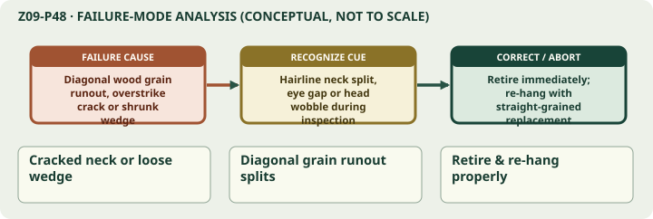

Z09-P48 · Tools and construction · New manuscript
Inspect wooden tool handles for grain runout, cracks and loose heads
Detect hidden wooden handle defects before a swinging axe, hammer or shovel snaps mid-use.
When it applies · Pre-trip inspection and purchasing/maintenance of hickory, ash or wood-handled camp and trail tools.
Equipment · Wooden-handled hand tools inspected in clear light.

Actions
- Sight along wooden axe and hammer handles for straight parallel grain running lengthwise with the head—steep diagonal grain runout splits diagonally under normal impact stress.[K03, K04]
- Check immediately below the metal eye/collar for crushed overstrike gouges, hairline checks, dry rot or gaps around the top wedge indicating a loose head that can fly off mid-swing.[K02, K03, K04]
- Keep sound wooden handles conditioned lightly with linseed oil and stored out of extreme dry stove heat that shrinks wood inside the head eye.[K04, ED]
Failure recognition · Wrapping electrical tape around a cracked axe neck or soaking a loose axe head in water overnight—which swells fibers briefly and leaves the head even looser after drying.[K04, K02]
Verify · Confirm straight lengthwise wood grain, tight immovable head seating and zero neck splits or overstrike cracks.[K03, K04, ED]
Stop or change course · Immediately remove any tool with a cracked handle or loose head from service until properly re-hung with a sound replacement handle.[K02, K03, K04]
Evidence and editorial notes
- K02 · OSHA · Hand and Power Tools (OSHA 3080) (agency PDF)
- Section: Hand Tools > Knives, Chisels, Impact and Wrenches · Conditions: Manual cutting, striking and prying operations
Support: Direct cutting blades away from the body and bystanders, never use cracked wooden handles or mushroomed striking heads, and do not substitute wrenches or blades as pry bars.
Limitations: Does not specify material tensile ratings for improvised handles. · Conflicting evidence: None; directly informs safe cutting and impact-tool failure cards.
Editorial note: Prevents blade slip, splintered-handle and spalling-metal injuries. · Specialist reviewer: Tool safety and wilderness medicine
Primary source · checked 2026-11-24
Current assessment · A04-K02 (2026-11-25) · Open: support partial or missing (A04): Supports misuse and defective equipment limits in occupational work. Exact cutting lane and equipment guidance varies by tool kept under specialist review. Limits: Specialist review PENDING (Tool safety and wilderness medicine); publication HOLD. All release decisions pending. - K03 · USDA Forest Service · Handtools for Trail Work (0523-2810-MTDC) (agency handbook)
- Section: Tool Selection, Inspection and Safe Transport · Conditions: Trail and campsite hand tools (axes, saws, shovels, pulaskis, wedges)
Support: Inspect handles for splits, loose heads and secure wedges before every use; sheath sharp edges during carry and maintain a clear work circle around swinging tools.
Limitations: Forestry guidelines apply to maintained commercial tools; improvised stone or salvaged blades carry higher failure risk. · Conflicting evidence: None; aligns with OSHA-3080.
Editorial note: Grounds woodworking, swinging-tool clearance, carrying and maintenance cards. · Specialist reviewer: Forestry tool safety and trail maintenance
Primary source · checked 2026-11-24 - K04 · USDA Forest Service · Handtools for Trail Work (0523-2810-MTDC) (agency handbook)
- Section: Sharpening, Filing and Handle Maintenance · Conditions: Maintaining cutting edges and wood tool handles in field or shop
Support: Secure the tool firmly before filing or honing, keep fingers behind file guards, preserve factory bevel geometry without overheating steel and replace loose or cracked handles rather than taping them.
Limitations: Field touch-up honing does not correct chipped, cracked or heat-annealed steel blades. · Conflicting evidence: None; separates routine edge maintenance from unsafe handle patching.
Editorial note: Guides sharpening, rust prevention and handle-failure retirement cards. · Specialist reviewer: Tool maintenance and forestry safety
Primary source · checked 2026-11-24
Source lineage · USFS trail handtools and OSHA 3080; new manuscript · Classification · New manuscript.